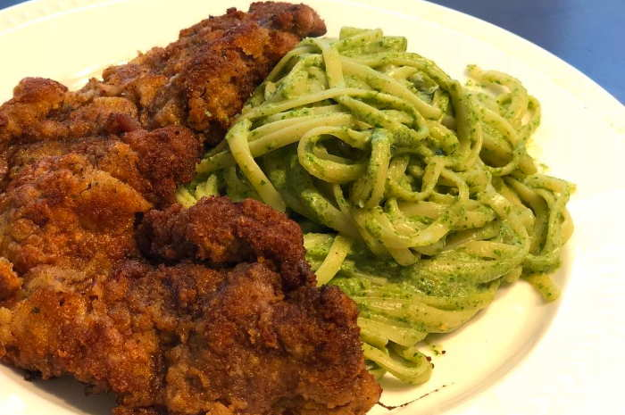

Bistec Apanado

This is the best Peruvian dish you will ever have in your life. For the love of god
make this dish and eat it whenever possible.
- 4 beef steaks
- 1/2 cup of wheat flour
- 2 beaten eggs
- 1 cup of crackers or breadcrumps
- Salt and pepper to taste
-
The first thing to do is cut the steaks into thin slices. Then season them with
a little salt and pepper.
-
On the other hand, it disintegrates the cookies or bread very well so that it
-
Next, proceed to flour the steaks on both sides until they are covered very well.
Then flatten them with the help of a kneader or a fuller's stone until the desired
thinness is obtained.
-
Pass them throught the egg and, finally, through the cookies or breadcrumbs.
-
Heat a frying pan with a drizzle of oil. When the oil is very hot, proceed to fry
the steaks, turning constantly to obtain an even browning.
-
Remove the steaks and place them on a paper towel to remove excess fat.
-
Serve each steak on a plate and accompany with a portion of green boodles and potatoes
a la huancaina. Another excellent option can be a serving of grained rice and parboiled
potatoes.